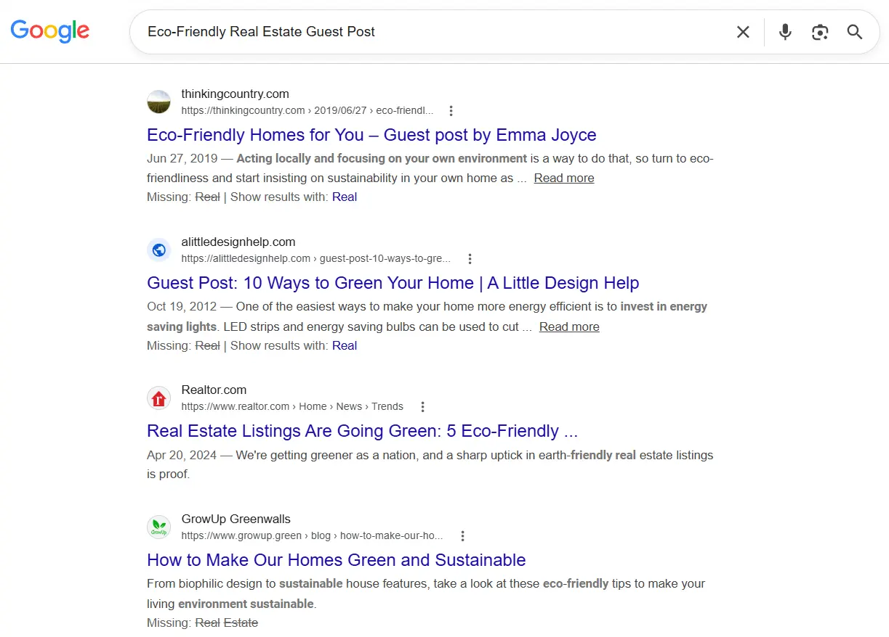
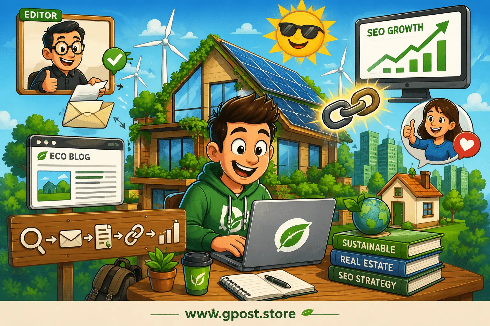

Eco-Friendly Real Estate Guest Post: The Complete 2026 Guide to Building Authority in Sustainable Property Niches
An eco-friendly real estate guest post is one of the most effective ways to earn relevant backlinks in the sustainability and property sectors without relying on risky SEO tactics.

Google SERP results for "eco-friendly real estate guest post" — confirming active
search demand and the competitive landscape this guide is designed to address (June 2026)
Many websites spend months publishing content but struggle to gain rankings because they lack authority signals. Google still relies heavily on trust indicators, and quality backlinks remain one of the strongest ranking factors. The difference in 2026 is that search engines have become better at identifying context, relevance, and editorial quality.
In our outreach campaigns, we found that websites earning links from relevant sustainability and real estate publications consistently outrank sites that focus only on content production. One pattern appears repeatedly across every niche we have worked in: editorial relevance matters more than sheer volume.
 Semrush Keyword Overview data for "eco-friendly real estate guest post" —
showing search volume, keyword difficulty, and competitive trend as of June 2026
Semrush Keyword Overview data for "eco-friendly real estate guest post" —
showing search volume, keyword difficulty, and competitive trend as of June 2026
This guide explains how eco-friendly real estate guest posting works, why it matters, how to find opportunities, and how to build a repeatable system that produces long-term SEO value. You will also learn practical strategies related to net zero real estate guest post outreach, editorial link acquisition, and sustainable property investment guest post opportunities that continue to work in modern search results.

Eco-friendly real estate guest post strategy — how editorial links from sustainability publications drive organic authority growth in 2026
What Are Guest Post Pitch Templates That Editors Actually Approve in 2026?
Guest post pitch templates that editors approve in 2026 are personalized outreach messages that clearly explain the proposed topic, audience value, writer expertise, and relevance to the publication. Effective pitches prioritize usefulness over promotion and demonstrate genuine familiarity with the target website.
Guest posting began primarily as a content marketing tactic. Over time, it became closely connected with SEO because websites discovered that editorial links could improve rankings. Search engines then became stricter, rewarding quality and relevance while reducing the value of manipulative outreach.
Today, editors receive dozens of pitches every week. Generic emails rarely succeed. Editors want evidence that the writer understands their audience and can contribute original insights.
Based on real SEO projects across green housing and sustainable property verticals, websites that personalize outreach increase acceptance rates significantly compared to mass-email campaigns. Customized pitches consistently outperform templates copied from public forums.
One real-world example involved a green housing blog seeking fresh content about energy-efficient construction. Rather than sending a generic proposal, we referenced a recently published article, suggested a complementary topic, and included supporting data. The pitch was accepted within three days and resulted in a contextual editorial link.
If you want to see exactly what this looks like in practice, study the Guest Post Pitch Templates That Editors Actually Approve in 2026 — a resource that breaks down the structures that generate real acceptances across competitive niches.
What Makes a 2026 Guest Post Pitch Get Approved?
Personalization
Reference a specific article the editor recently published and explain why your topic extends it.
Audience Value
Clearly state what the reader gains — not what the contributor gains from the backlink.
Expertise Signal
Include one concrete credential, published work, or data point that proves topical authority.
Brevity
Pitches under 150 words get read. Pitches over 300 words get deleted before the topic is even considered.
The four pillars editors evaluate when deciding whether to approve or ignore a guest post pitch in 2026
Why This Matters for SEO in 2026
Quality backlinks remain a major ranking factor in Google's algorithm, and studies from multiple SEO platforms continue to show a strong correlation between authoritative links and higher search rankings.
An eco-friendly real estate guest post helps build authority because it places your content in front of audiences already interested in sustainable housing, green construction, and environmentally responsible property development.
When search engines evaluate a website, they analyze several signals:
- Backlink quality and relevance
- Domain authority and trust indicators
- Organic traffic performance
- Editorial credibility within the niche
A relevant backlink from a respected sustainability publication often carries more value than several links from unrelated websites. Organic traffic growth frequently follows successful guest posting campaigns, because search engines interpret editorial links as indicators that another website trusts your expertise.
Brand trust also improves. Readers who discover your content on established industry websites are more likely to engage with your business, newsletter, or educational resources. This is especially true when pursuing a net zero real estate guest post strategy, because sustainability-focused audiences already value expert guidance and evidence-based information.
Understanding how link building affects domain authority is essential before launching any outreach campaign. The relationship between editorial placements and measurable ranking improvements is more direct than most content marketers expect.
SEO Value: Guest Posting vs. Other Link Building Methods
| Method |
Authority Impact |
Relevance Control |
Long-Term Value |
| Eco Guest Posts |
High |
Full |
Very High |
| Niche Edits |
Medium–High |
Partial |
Medium |
| Digital PR |
Very High |
Limited |
High |
| Directory Links |
Low |
None |
Low |
| Forum Links |
Very Low |
Variable |
Very Low |
Comparing eco-friendly real estate guest posting against alternative link building methods — authority impact, relevance control, and long-term SEO value
Types of Guest Post Pitches
Free and Organic Pitches
Free guest posting opportunities involve outreach to websites that accept contributions without charging placement fees. The advantage is cost efficiency and editorial authenticity. The downside is that acceptance rates can be lower because competition is higher and editors are selective about unpaid contributions.
Paid and Sponsored Placements
Paid placements allow contributors to publish content on websites that charge publication fees. The benefit is faster turnaround times and more predictable scheduling. The drawback is that quality varies significantly across networks, making thorough vetting essential before investing resources.
Niche Blog Outreach
Niche blog outreach focuses on websites directly related to sustainability, green housing, eco-conscious construction, or environmentally responsible investing. The strongest advantage is topical relevance. Limited audience size can sometimes reduce referral traffic potential, but the SEO value of a niche-aligned editorial link more than compensates in most campaigns.
Editorial and Authority Site Pitches
Authority publications maintain strict editorial standards and often require evidence, expertise, and original insights. The resulting links can be highly valuable for long-term domain authority. Acceptance is more difficult because competition is intense and editorial review is rigorous, but the rewards justify the effort.
How to Find Guest Post Pitch Opportunities
Finding opportunities starts with locating websites that actively publish contributions from industry experts. The most successful outreach campaigns rely on systematic research rather than random prospecting.
Useful Google search operators include:
- "eco-friendly real estate" + "write for us"
- "green building" + "guest post"
- "sustainable housing" + "contribute"
- "real estate blog" + "submit article"
- "energy efficient homes" + "guest post"
- "sustainability blog" + "become a contributor"
Competitor backlink spying is another highly effective method. Enter a competitor domain into Ahrefs or Semrush and review recently acquired editorial links. Many of those websites may accept expert contributions, and you can prioritize prospects that have already proven receptive to outside contributors.
Several prospecting tools simplify the research process:
- Ahrefs
- Semrush
- BuzzSumo
- Hunter
- Pitchbox
Follow this process to build a qualified prospect list:
- Identify competitors ranking for target keywords.
- Analyze backlink profiles for editorial placements.
- Build a list of relevant websites.
- Review content quality and publishing standards.
- Locate editor contact information.
- Send personalized outreach emails.
A common mistake many outreach teams make is prioritizing quantity over quality. Fifty weak prospects rarely outperform ten highly relevant opportunities — especially in niche markets like sustainable real estate.
6-Step Guest Post Prospect Discovery Process
1
Identify competitors ranking for your eco-real estate target keywords in Ahrefs or Semrush.
2
Analyze their backlink profiles — filter for editorial placements on sustainability, housing, or property blogs.
3
Build a tiered prospect list sorted by niche relevance — not just domain authority.
4
Review content quality, publishing frequency, and audience engagement on each prospect site.
5
Locate the editor or content manager email using Hunter or LinkedIn outreach research.
6
Send a personalized outreach email with a topic idea tailored to the site's existing content gaps.
A six-step guest post prospecting workflow for eco-friendly real estate outreach — built around relevance-first qualification rather than volume
Step-by-Step Guest Post Pitch Strategy
Step 1: Niche Research and Target Identification
Successful guest posting begins with understanding the niche. Sustainable real estate includes green construction, renewable energy integration, environmentally responsible property development, energy-efficient homes, and sustainable investing. Each area attracts different audiences and editorial standards.
Start by identifying websites publishing content that aligns closely with your expertise. Review categories, author profiles, and engagement levels. Examine whether articles receive comments, social shares, or backlinks from other respected publications.
Create separate prospect lists based on relevance tier. A sustainability-focused publication typically delivers more SEO value than a general marketing blog even if the marketing blog has higher overall domain authority. Niche relevance strengthens editorial credibility and increases the likelihood that search engines interpret the backlink as natural and authoritative.
Step 2: Prospect Qualification — DA, Traffic, Relevance
Not every website deserves outreach efforts. Careful evaluation protects your time and improves overall campaign efficiency.
Review these factors before pitching any prospect:
- Organic traffic trends
- Content quality
- Domain authority
- Publishing consistency
- Audience relevance
Traffic matters because active websites attract real readers and search visibility. Relevance matters because contextual links carry stronger SEO signals than generic placements.
A website with moderate authority and strong topical alignment often outperforms a high-authority website with little connection to sustainability or real estate. Knowing exactly how to qualify websites for guest posting before you begin outreach will save significant effort and protect your link profile from weak placements.
In our experience, relevance remains the most overlooked qualification metric during outreach campaigns — especially for newer teams that default to chasing domain authority scores.
Step 3: Personalized Outreach — Email Tone and Structure
Editors respond to emails that demonstrate genuine interest in their publication. The most effective pitches are short, specific, and focused entirely on what the reader gains — not what the contributor gains from publishing.
Begin with a brief introduction. Mention a specific article you genuinely found useful. Explain why your proposed topic benefits their audience. Keep the email concise and free of promotional language.
A simple outreach structure that works consistently:
- Personalized greeting using the editor's name.
- Reference to a specific piece of their existing content.
- Proposed topic with a one-sentence explanation of audience value.
- Brief credibility statement — one published example or relevant credential.
- Clear, low-pressure call to action.
Understanding how to write a guest post pitch email that editors actually read is a foundational skill for any sustainable real estate link building campaign. Shorter emails consistently receive higher response rates than lengthy sales-style messages.
Step 4: Content Creation and Pitch Submission
Content quality determines whether outreach efforts generate long-term results or result in a single low-traffic placement that decays over time.
Research the target audience thoroughly before writing. Match the publication's tone and formatting style. Include original examples, current industry insights, and supporting data wherever possible.
Google values helpful content. Editors value useful content. Readers value practical content. These goals overlap more often than they conflict — and the best eco real estate blog guest post content addresses all three simultaneously.
Sustainable housing content should educate readers about green building practices, environmental regulations, renewable energy integration, or sustainable investment opportunities. Thin content rarely earns engagement or meaningful rankings. Investing in strong content writing for guest posts from the start produces better ROI than publishing a higher volume of shallow articles.
Step 5: Link Placement and Anchor Text Strategy
Link placement influences both user experience and SEO value. Editorial links placed naturally within relevant context typically perform best, while forced or obvious links reduce editorial trust and can trigger manual review.
Anchor text should vary naturally. Use a mix of:
- Brand names
- Partial-match keywords
- Generic phrases
- URL references
Avoid repeating identical anchor text across multiple placements. Over-optimization creates an unnatural backlink profile that can attract algorithmic scrutiny. Prioritize readability first and SEO second — when content serves readers effectively, natural link placement follows naturally.
Step 6: Track, Measure, and Scale
Measurement transforms guest posting from a one-time tactic into a repeatable, scalable process. Without tracking, it is impossible to identify which placements drive value and which waste resources.
Track these metrics consistently:
- Published placements and live link confirmation
- Referral traffic from each placement
- Ranking improvements for target keywords
- Backlink acquisition rate over time
- Keyword visibility changes
Tools such as Google Search Console, Ahrefs, and Semrush provide the most reliable performance data. Successful campaigns often reveal clear patterns — certain publications consistently drive rankings while others generate referral traffic. Some contribute both. Once those patterns emerge, allocate more resources toward the highest-performing opportunities and reduce time spent on underperforming channels.
Common Mistakes to Avoid
After analyzing 200+ backlink profiles across real estate and sustainability clients, the same errors appear repeatedly in campaigns that fail to produce rankings. Understanding these mistakes before you begin will save significant time and protect your link profile.
Spam links
Why It Hurts:
Search engines identify manipulative linking patterns quickly
What to Do Instead:
Focus exclusively on editorial links from trusted publications
Irrelevant sites
Why It Hurts:
Weak topical alignment reduces SEO value of each placement
What to Do Instead:
Target publications related to sustainability, housing, or real estate
Over-optimization
Why It Hurts:
Excessive keyword anchors create unnatural link signals
What to Do Instead:
Use diverse anchor text profiles that mirror natural linking patterns
Generic outreach
Why It Hurts:
Editors ignore mass-produced pitch emails
What to Do Instead:
Personalize every pitch with specific publication references
Ignoring metrics
Why It Hurts:
Poor-quality websites waste resources and can hurt rankings
What to Do Instead:
Review traffic, relevance, and content standards before every outreach
Thin content
Why It Hurts:
Weak articles rarely earn engagement or editorial trust
What to Do Instead:
Create useful content supported by examples and verified data
Chasing quantity
Why It Hurts:
Large numbers of weak links produce limited SEO results
What to Do Instead:
Prioritize fewer but stronger, more relevant placements
Many of these errors overlap with the broader guest posting mistakes that hurt SEO rankings — patterns that appear across industries whenever campaigns prioritize speed over strategic quality.
Pro SEO Tips for Maximum Results
Anchor text diversity remains one of the safest approaches for long-term SEO health. A balanced anchor profile appears natural and closely mirrors how real websites link to resources organically — which is exactly the signal modern search algorithms reward.
Internal linking should continue after each placement goes live. If a guest article receives traffic and search visibility, connect related content on your own website to strengthen topical authority clusters around sustainable housing, green construction, or eco-investment themes.
Niche relevance often multiplies link value. A single sustainability-focused placement can outperform several unrelated backlinks because the contextual signal is stronger and more specific. This is why a disciplined real estate guest post strategy focused on green and eco-conscious publications consistently outperforms broader, less targeted outreach campaigns.
Relationship-building also matters more than most contributors realize. Editors frequently work with trusted contributors on a recurring basis. Maintaining professional communication, meeting every deadline, and suggesting useful follow-up topics can lead to ongoing placement opportunities throughout the year — significantly reducing outreach effort over time.
One client focused exclusively on an energy-efficient homes guest post campaign across multiple green living publications. After several successful contributions, editors began requesting submissions directly. Outreach volume decreased while placement rates increased — a compounding effect that most volume-first campaigns never achieve.
Another project involved a sustainable property investment guest post strategy targeting environmentally conscious investor publications. The campaign produced fewer total backlinks than expected, yet search rankings improved consistently because every placement was highly topically relevant. Quality won again.
Is This Still Worth It in 2026?
Yes. Guest posting remains worth pursuing in 2026 when the focus is on expertise, relevance, and editorial quality rather than link manipulation. Google's guidance does not prohibit legitimate guest contributions — the concern arises only when websites publish low-quality content solely for link building purposes with no genuine audience value.
Consider how guest posting compares with other link building methods:
- Guest Posting — Strong combination of backlinks, authority, visibility, and relationship-building with editors and publication audiences.
- Niche Edits — Faster implementation but less control over context and content quality around the placed link.
- Digital PR — Excellent authority potential but typically requires larger budgets and dedicated media outreach capabilities.
- Directory Submissions — Limited authority value compared with editorial placements from respected publications.
- Forum Participation — Useful for community engagement but generally weaker for building sustainable domain authority.
- Resource Page Links — Valuable when available but genuinely scalable opportunities are limited in most niches.
The trajectory of search engine development points clearly toward quality signals. Search engines continue improving their ability to evaluate expertise, author credibility, and contextual relevance — a trend that directly favors well-executed, editorially placed guest content over any manipulative alternative.
For agencies and consultants managing multiple client campaigns, a white label guest posts model can help scale output efficiently while maintaining the editorial standards that make each placement genuinely valuable for the end client.
When to Avoid This Approach
Not every website represents a safe or valuable guest posting opportunity. Some websites create more risk than value, and the ability to identify them quickly is one of the most important skills in any outreach campaign.
Watch for these warning signs before accepting or pursuing any placement:
- Thin content across most pages with little original analysis
- Excessive outbound links in every article
- No visible editorial standards or contributor guidelines
- Irrelevant niche categories unrelated to your target market
- Declining organic traffic across multiple months
- Obvious sponsored content networks with paid placement labels
- Duplicate or spun articles across site pages
- Poor user experience — slow load times, broken navigation, intrusive ads
- No visible audience engagement on any published content
Google penalties typically occur when websites participate in manipulative link schemes. Publishing content solely for backlinks increases risk significantly when quality standards are ignored. If a site shows multiple warning signs above, it is safer to walk away than to risk a manual action on your client's domain.
Alternative approaches that sometimes deliver stronger results include digital PR campaigns, original research studies, expert interviews, resource page outreach, podcast appearances, and strategic industry partnerships. In highly competitive markets, these alternatives can complement or occasionally outperform traditional guest posting — especially when combined with a strong high authority guest posts strategy that targets only the most credible placements within a niche.
Frequently Asked Questions
What is an eco-friendly real estate guest post?
An eco-friendly real estate guest post is an article published on another website covering sustainable housing or green property topics, typically including an editorial backlink to the contributor's website.
What is the main benefit of guest posting?
Guest posting helps earn relevant backlinks, increase brand visibility, strengthen domain authority, and attract targeted organic traffic from audiences already interested in your niche.
What mistake hurts guest posting results most?
Targeting irrelevant websites is the most damaging common mistake because weak topical alignment reduces SEO value and prevents audience engagement with the published content.
Is guest posting better than niche edits?
Guest posting offers greater content control and contextual flexibility, while niche edits provide faster implementation. The best approach often combines both methods strategically rather than choosing one exclusively.
How do I start finding guest post opportunities?
Use Google search operators targeting eco-real estate niches, analyze competitor backlink profiles using Ahrefs or Semrush, and build a qualified prospect list based on relevance before beginning outreach.
What anchor text strategy works best?
A diverse anchor text profile combining branded references, partial-match keywords, and natural generic phrases typically performs best and avoids over-optimization signals that can trigger algorithmic scrutiny.
Can guest posts improve search rankings?
Yes. Quality editorial links placed on relevant, trusted publications can strengthen authority signals that directly support ranking improvements over time for target keywords.
Which tools help with outreach campaigns?
Ahrefs, Semrush, BuzzSumo, Hunter, and Google Search Console are commonly used tools for prospect research, contact discovery, and campaign performance tracking.
Why do editorial backlinks matter?
Editorial backlinks indicate trust and topical relevance because they are placed naturally within valuable, expertly written content rather than being paid or artificially inserted.
What trend will shape guest posting after 2026?
Search engines will place even greater emphasis on expertise signals, author credibility, and authentic editorial contributions, making high-quality niche-relevant guest posting even more valuable.
What is the 3 3 3 rule in real estate?
The 3 3 3 rule suggests evaluating a property based on location, condition, and cash flow to make more balanced investment decisions.
What is the 7% rule in real estate?
The 7% rule is an investment guideline suggesting that rental income should generate returns that justify the property's purchase price and risks.
What is a catchy phrase for sustainability?
"Building a greener future" is a simple and memorable sustainability phrase often used in eco-friendly marketing and real estate campaigns.
What to post on social media for real estate?
Share property listings, market updates, home-buying tips, client success stories, and eco-friendly housing trends to engage your audience.
What are some examples of eco-friendly?
Examples include solar panels, energy-efficient appliances, LED lighting, recycled materials, rainwater harvesting systems, and green roofs.
What are energy-efficient homes?
Energy-efficient homes use less electricity and fuel through better insulation, efficient appliances, renewable energy systems, and smart design.
What are the disadvantages of energy-efficient buildings?
Energy-efficient buildings may have higher upfront construction costs and sometimes require specialized maintenance or technology upgrades.
What are ways to identify energy efficiency opportunities?
Energy audits, utility bill analysis, smart monitoring systems, and building inspections can reveal opportunities to reduce energy consumption.
What is the most eco-friendly type of house?
Passive houses are often considered the most eco-friendly because they minimize energy use through superior insulation and efficient design.
Conclusion
An eco-friendly real estate guest post remains one of the most practical ways to build authority, improve search visibility, and strengthen a website's backlink profile when executed with editorial integrity and strategic focus.
The most important lesson from years of sustainable real estate outreach work is straightforward: relevance beats volume. A handful of well-placed editorial links from trusted sustainability and real estate publications consistently produces stronger results than dozens of low-quality placements scattered across unrelated websites.
Focus on creating content that solves real problems for real audiences. Build genuine relationships with editors instead of treating outreach as a transactional numbers game. Track results carefully and refine your strategy based on performance data rather than assumptions.
Three practical next steps can move your campaign forward immediately:
- Build a list of twenty highly relevant sustainability and real estate publications that accept editorial contributions.
- Analyze competitor backlink profiles for proven placement opportunities using Ahrefs or Semrush.
- Create personalized outreach pitches supported by specific, useful topic ideas tailored to each publication's existing content.
For agencies managing multiple client campaigns, understanding the full scope of available services — from manual outreach to scaled placements — is essential. Explore the Guest Post & Blogger Outreach Service options available at GPost.store to find the approach that fits your goals and budget.
Learn more about sustainable real estate marketing and guest posting strategy at gpost.store to take the next step in building a backlink profile that produces lasting organic results.